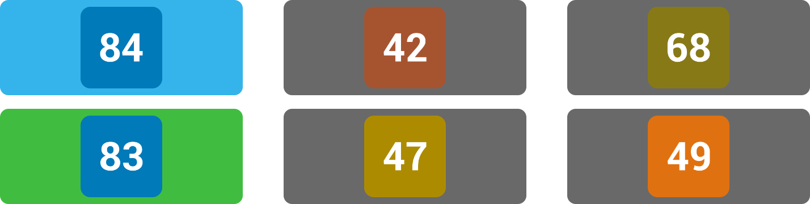

Line

is in the correct place in the route.
Line

is included within the route, but is in the incorrect place.
Neither of lines

,

, and

, make up any part of the route.

There is another line which shares a portion of its route with

, that is in this position of the route.
This means that a potential passenger who would want to cover this exact same route, transfering at the same stops, may choose from two or more services to cover this segment.
In the example above, the passenger could have gone with

, which turns out to be the correct answer.